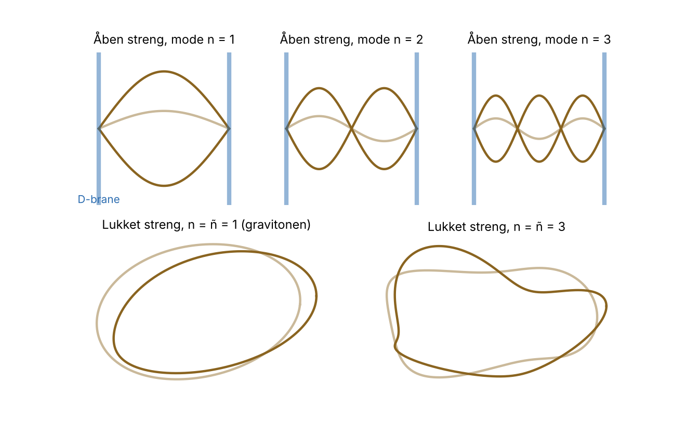
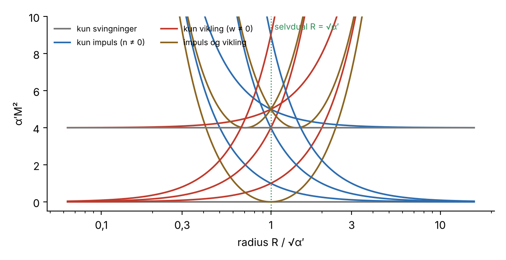
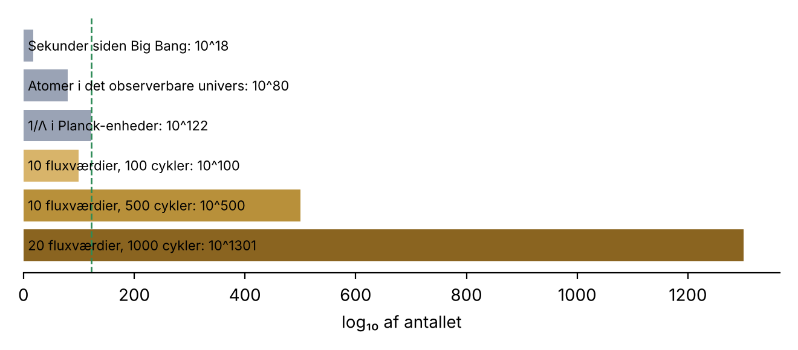

Problemet: tyngdekraft og kvantemekanik
Fysikken hviler i dag på to søjler. Standardmodellen beskriver elektromagnetisme og de stærke og svage kernekræfter som kvantefelter, og den er testet med op til tolv decimalers nøjagtighed. Den almene relativitetsteori beskriver tyngdekraften som rumtidens krumning, og den har klaret alt fra Merkurs perihel til gravitationsbølger. Men de to teorier passer ikke sammen.
Prøver man at behandle tyngdekraften som et kvantefelt på samme måde som de andre kræfter, med en partikel – gravitonen – som formidler, går det galt ved høje energier. I Feynman-diagrammer med løkker optræder integraler, der divergerer, og for tyngdekraften kan uendelighederne ikke fjernes med renormalisering, fordi Newtons konstant har dimension. Hver ny orden kræver nye, ukendte konstanter. Teorien mister sin forudsigelseskraft ved Planck-skalaen:
Det er her, strengteorien kommer ind. Dens grundidé er, at problemet skyldes, at vi behandler partikler som punkter.
Fra punkt til streng
En punktpartikel tegner en verdenslinje i rumtiden. Når to partikler vekselvirker, mødes verdenslinjerne i et punkt – og det er netop i disse skarpe punkter, uendelighederne opstår. En streng tegner i stedet en verdensflade. Når to lukkede strenge smelter sammen, sker det ikke i et bestemt punkt: verdensfladen er glat overalt, som et par bukser. Vekselvirkningen er „smurt ud", og integralerne bliver endelige.
Strengens dynamik følger af det simplest tænkelige princip: virkningen er proportional med verdensfladens areal (Nambu–Goto-virkningen), ligesom en punktpartikels virkning er proportional med længden af dens verdenslinje.
Her er $T$ strengens spænding, og $\alpha'$ (læses „alfa-mærke") er teoriens eneste frie parameter. Strengens karakteristiske længde er $\ell_s = \sqrt{\alpha'}$. I de fleste modeller er den tæt på Planck-længden – omkring tyve størrelsesordener mindre end en proton.
Toner som partikler
En guitarstreng kan svinge i grundtonen og i overtonerne. En fundamental streng kan det samme, og hver svingningstilstand opfører sig som en bestemt partikel. Jo højere mode, jo mere energi, og dermed jo større masse. For en åben streng (med frie ender) i den simpleste, bosoniske strengteori gælder
hvor $N$ er det samlede excitationsniveau. For $N = 1$ er $M = 0$: en masseløs partikel med spin 1 – præcis som fotonen. For en lukket streng (en løkke) er der bølger, der løber hver sin vej rundt, og deres niveauer $N$ og $\tilde N$ skal være lige store:
For $N = \tilde N = 1$ er $M = 0$ igen, men nu er spinnet 2. En masseløs partikel med spin 2 vekselvirker nødvendigvis som tyngdekraften. Strengteorien indeholder altså gravitonen, uden at nogen har puttet den ind. Det var den opdagelse, der i 1974 forvandlede en mislykket teori for kernekræfterne til en kandidat til en teori for alt.
Til gengæld har den bosoniske streng ved $N = 0$ en tilstand med $M^2 < 0$, en tachyon, som signalerer en ustabilitet. Den forsvinder i superstrengteorien, hvor strengene også bærer fermioniske frihedsgrader.

Hvorfor 26 eller 10 dimensioner?
Strengteorien vælger selv, hvor mange dimensioner rumtiden har. Grunden er nulpunktsenergien. Hver svingningsmode $n$ af strengen er en kvanteharmonisk oscillator med nulpunktsenergi $\tfrac12\hbar\omega_n$, og der er én for hver af de $D-2$ tværgående retninger. Summen over alle modes divergerer, men regulariseret med Riemanns zetafunktion giver den
Teorien er kun Lorentz-invariant, hvis den første exciterede tilstand er masseløs, og det kræver $a = 1$. Altså $D = 26$. I superstrengteorien bidrager fermionerne med halvtallige modes, og betingelsen bliver $(D-2)/16 = \tfrac12$, altså $D = 10$.
Vi ser kun fire dimensioner. De resterende seks må derfor være kompaktificerede – krøllet sammen så småt, at vi ikke kan mærke dem. Ideen er ældre end strengteorien: Theodor Kaluza og Oskar Klein viste i 1920'erne, at en femte, sammenrullet dimension kan give elektromagnetismen af sig selv. I strengteorien har de seks ekstra dimensioner typisk form som en Calabi–Yau-mangfoldighed, og dens geometri bestemmer, hvilke partikler og kræfter vi ser i fire dimensioner.
T-dualitet: en lille cirkel er en stor cirkel
Lad én dimension være rullet op til en cirkel med radius $R$. En lukket streng kan nu have impuls rundt om cirklen, kvantiseret som $n/R$ – ligesom en punktpartikel. Men strengen kan også vikle sig $w$ gange rundt om cirklen, og så koster dens længde energi proportional med $wR$. Massespektret bliver
Formlen er uændret, hvis man bytter $R \leftrightarrow \alpha'/R$ og samtidig $n \leftrightarrow w$. En streng på en cirkel med radius $R$ kan ikke skelnes fra en streng på en cirkel med radius $\alpha'/R$. Der findes altså en mindste meningsfuld længde, $\sqrt{\alpha'}$: at gøre cirklen mindre er det samme som at gøre den større. Ved selve den selvduale radius $R = \sqrt{\alpha'}$ bliver nogle af de viklede tilstande masseløse, og der opstår ekstra symmetri.

Historien i korte træk
| År | Begivenhed |
|---|---|
| 1968 | Gabriele Veneziano finder en formel, der beskriver spredning af stærkt vekselvirkende partikler (mesoner). |
| 1969–70 | Yoichiro Nambu, Holger Bech Nielsen (Niels Bohr Institutet) og Leonard Susskind indser uafhængigt af hinanden, at Venezianos formel beskriver svingende strenge. |
| 1973 | Kvantekromodynamikken (QCD) vinder som teori for de stærke kernekræfter, og strengene bliver forældede. Holger Bech Nielsen og Poul Olesen viser samme år, at feltlinjer i visse feltteorier kan klumpe sig sammen til strengelignende hvirvler. |
| 1974 | Joël Scherk og John Schwarz – og uafhængigt Tamiaki Yoneya – foreslår, at den masseløse spin-2-tilstand er gravitonen. Strengteori bliver en teori for tyngdekraft. |
| 1984 | Michael Green og John Schwarz viser, at anomalierne i superstrengteorien ophæver hinanden. „Den første superstrengrevolution". |
| 1995 | Edward Witten viser, at de fem superstrengteorier er grænsetilfælde af én 11-dimensional M-teori. Joseph Polchinski indfører D-branerne. „Den anden revolution". |
| 1996 | Andrew Strominger og Cumrun Vafa udleder Bekenstein–Hawkings entropi for visse sorte huller ved at tælle strengtilstande. |
| 1997 | Juan Maldacena formulerer AdS/CFT-korrespondancen. |
| 2000–05 | Bousso–Polchinski, KKLT og Susskind: strengteorien har et enormt landskab af mulige vakua. Den antropiske debat begynder. |
| 2006 | Lee Smolins The Trouble with Physics og Peter Woits Not Even Wrong udkommer. Kritikken når den brede offentlighed. |
| 2010– | LHC finder Higgs-bosonen (2012), men ingen supersymmetriske partikler. |
Hvad strengteorien har givet
En kvanteteori med tyngdekraft
Strengteorien er det eneste kendte rammeværk, hvor gravitonen optræder automatisk, og hvor de perturbative beregninger af tyngdekraftens kvanteeffekter ser ud til at være endelige orden for orden.
Sorte hullers entropi
Bekenstein og Hawking viste, at et sort hul har entropien $S = k_B A/(4\ell_P^2)$. Strominger og Vafa genfandt formlen præcist, inklusive faktoren 1/4, ved at tælle mikrotilstande af D-braner – for en særlig klasse af sorte huller.
Holografi og AdS/CFT
Maldacenas korrespondance siger, at en tyngdekraftsteori i et anti-de Sitter-rum er ækvivalent med en kvantefeltteori uden tyngdekraft på dets rand. Den bruges i dag til beregninger af stærkt koblede systemer, fx viskositeten af kvark-gluon-plasma, hvor forholdet $\eta/s \approx \hbar/(4\pi k_B)$ ligger tæt på det målte.
Matematik
Spejlsymmetri mellem Calabi–Yau-rum løste gamle problemer i tællende geometri. Richard Borcherds brugte vertexalgebraer fra strengteorien i sit bevis for „monstrous moonshine" (Fields-medaljen 1998), og Edward Witten fik selv Fields-medaljen i 1990 som den første fysiker.
Kritikken
Kritikken af strengteorien kommer ikke fra folk, der ikke forstår den. Den kommer fra fysikere som Sheldon Glashow, Lee Smolin, Peter Woit, Sabine Hossenfelder, George Ellis og Joseph Silk – og allerede i 1980'erne fra Richard Feynman. Hovedpunkterne er:
1. Ingen testbare forudsigelser
Efter halvtreds år har strengteorien ikke forudsagt et eneste eksperimentelt resultat, som efterfølgende er blevet bekræftet. Det skyldes især energiskalaen. Strengenes effekter bliver først tydelige ved energier omkring Planck-energien, og den er utilgængelig:
En ringaccelerator med LHC's magneter (8,3 T) har radius $r = E/(0{,}3\,B)$ med $E$ i GeV og $r$ i meter. For at give hver stråle halvdelen af Planck-energien skal radius være omkring $2{,}4\cdot10^{18}$ m – cirka 260 lysår.
Fortalerne svarer, at teorien ikke behøver at blive testet direkte ved Planck-skalaen. Den kunne efterlade spor ved lavere energier: supersymmetriske partikler, ekstra dimensioner af millimeter-størrelse, kosmiske strenge eller mønstre i den kosmiske baggrundsstråling. Men ingen af disse spor er fundet, og ingen af dem er specifikke for strengteori.
2. Supersymmetri er ikke dukket op
De fleste realistiske strengmodeller kræver supersymmetri – en symmetri mellem bosoner og fermioner, der giver hver kendt partikel en tungere partner. Mange forventede, at partnerne ville vise sig ved LHC, fordi supersymmetri ved TeV-skalaen også ville forklare, hvorfor Higgs-massen ikke trækkes op mod Planck-skalaen. Indtil videre er der ikke fundet nogen. Grænserne ligger nu omkring 2 TeV for gluinoer og omkring 1 TeV for stop-kvarker. Strengteorien forbyder ikke, at supersymmetrien brydes ved meget højere energi – men så forsvinder den naturlige forklaring, og teorien bliver endnu sværere at teste.
3. Landskabet: for mange løsninger
Den største indvending handler om forudsigelseskraft selv i princippet. Ligningerne har ikke én løsning, men et astronomisk antal – et for hver måde at kompaktificere de seks ekstra dimensioner på og fylde dem med felter. Hvert vakuum giver en anden lavenergifysik: andre partikler, andre koblingskonstanter, en anden kosmologisk konstant. Det mest citerede tal er $10^{500}$, men nogle skøn er langt større. Se næste afsnit.
4. Baggrundsafhængighed
Den almene relativitetsteoris store lære er, at rumtidens geometri er dynamisk. Men strengteorien er (bortset fra AdS/CFT) formuleret som strenge, der bevæger sig i en fast baggrundsrumtid. Lee Smolin og fortalerne for løkkekvantegravitation mener, at en fundamental teori ikke kan forudsætte den rumtid, den skal forklare. Der findes ingen fuld, ikke-perturbativ definition af M-teori.
5. Sociologien
Smolin og Woit kritiserede også fagets kultur: at strengteori i 1990'erne og 2000'erne dominerede ansættelser i teoretisk højenergifysik i USA, så alternative tilgange havde svært ved at få fodfæste. Sabine Hossenfelder argumenterer i Lost in Math (2018) for, at fysikere i mangel af data er begyndt at bruge skønhed og „naturlighed" som rettesnor – og at netop naturlighedsargumentet slog fejl ved LHC.
Landskabet og det antropiske argument
Hvor kommer tallet $10^{500}$ fra? I en typisk kompaktificering har Calabi–Yau-rummet hundredvis af uafhængige „huller" (cykler), og gennem hvert kan der løbe en kvantiseret flux. Har man $N$ cykler, og kan hver flux antage omkring $K$ værdier, bliver antallet af vakua omkring
Det er Bousso og Polchinskis argument fra 2000. Det bruges også positivt: den kosmologiske konstant $\Lambda$ er ca. $10^{-122}$ i Planck-enheder. Er værdierne fordelt nogenlunde jævnt, vil omkring hvert $10^{122}$. vakuum have en så lille $\Lambda$. Med $10^{500}$ vakua er der stadig $10^{378}$ af dem. Kombineret med Steven Weinbergs argument fra 1987 – at galakser og dermed observatører kun kan dannes, hvis $\Lambda$ er lille – forklarer det, hvorfor vi netop ser en lille værdi. Det er det antropiske argument.

For kritikerne er det netop her, teorien holder op med at være fysik. Hvis teorien kan rumme næsten enhver lavenergifysik, forudsiger den ingenting. „Forklaringen" af $\Lambda$ hviler på et multivers af andre universer, som vi aldrig kan observere. Selv blandt strengteoretikerne er argumentet omstridt: David Gross har med et citat fra Churchill opfordret kollegerne til aldrig at give op med at finde en egentlig forklaring. For fortalerne er det et ærligt udtryk for, at nogle naturkonstanter måske er miljøbestemte, ligesom Jordens afstand til Solen.
Siden 2005 har Cumrun Vafa og andre udviklet sumpen (the swampland): formodninger om, hvilke lavenergiteorier der ikke kan komme fra strengteori. En af dem siger, at stabile de Sitter-vakua med positiv $\Lambda$ måske slet ikke findes i strengteorien. Det ville betyde, at den mørke energi ikke kan være en helt konstant størrelse. Målingerne fra DESI i 2024–25 har antydet, at den mørke energi måske ændrer sig med tiden, og nogle strengteoretikere har set det som et muligt tegn i retning af disse formodninger. Resultatet er endnu ikke afgørende.
Forsvaret
Joseph Polchinski, Brian Greene, Edward Witten og mange andre har svaret på kritikken. De vigtigste argumenter er:
- Den eneste kandidat. Det har vist sig ekstremt svært at konstruere en konsistent kvanteteori for tyngdekraft. Strengteorien er den eneste kendte tilgang, der kombinerer tyngdekraft med de andre kræfter, og som automatisk indeholder gravitonen.
- Indre konsistens som test. Anomaliophævelsen i 1984, entropien af sorte huller og AdS/CFT var ikke indbygget i teorien – de dukkede op og passede. Sådanne uventede sammenhænge er, siger fortalerne, et tegn på, at teorien rammer noget rigtigt.
- Nytte uden for sig selv. AdS/CFT bruges i kernefysik og kondenseret stofs fysik, og strengteorien har givet matematikken flere dybe resultater.
- Tålmodighed. Atomteorien var omstridt i over hundrede år, før den blev bekræftet. Gravitationsbølgerne blev forudsagt i 1916 og målt i 2015. At en teori endnu ikke er testet, er ikke det samme som, at den ikke kan testes.
Polchinski anmeldte både Smolins og Woits bøger i 2007 og anerkendte, at kritikken havde ramt rigtige problemer, men mente, at de undervurderede, hvor meget teorien faktisk havde lært fysikerne.
Er det videnskab?
Debatten om strengteori er også en debat om, hvad videnskab er. Ifølge Karl Popper er en teori kun videnskabelig, hvis den kan falsificeres – og det kan strengteorien i sin nuværende form næppe. I 2014 skrev George Ellis og Joseph Silk i Nature, at fysikkens integritet var truet, hvis man begyndte at acceptere teorier uden mulighed for eksperimentel afprøvning. Filosoffen Richard Dawid har omvendt argumenteret for, at man kan have rationel tillid til en teori på grundlag af ikke-empiriske argumenter: at der ikke er fundet alternativer, at teorien uventet forklarer ting, den ikke var designet til, og at lignende teorier tidligere har vist sig rigtige.
Imre Lakatos' begreb om forskningsprogrammer giver måske et mere frugtbart billede: et program er progressivt, så længe det fører til nye, overraskende resultater, og degenererende, når det kun forsvarer sig selv med hjælpehypoteser. Om strengteorien i dag er det ene eller det andet, er netop det, parterne er uenige om. Se også siden Den naturvidenskabelige metode findes ikke.
Status
Strengteorien er stadig et stort og aktivt forskningsfelt, men dens rolle har ændret sig. Mange strengteoretikere arbejder i dag mindre med at finde det vakuum, der beskriver vores verden, og mere med holografi, kvanteinformation, sorte huller og matematisk fysik – emner, hvor strengteoriens redskaber har vist sig nyttige. Samtidig er alternative tilgange som løkkekvantegravitation, asymptotisk sikkerhed og kausale dynamiske trianguleringer blevet mere synlige.
Ingen af tilgangene har endnu givet en bekræftet forudsigelse om kvantetyngdekraft. Spørgsmålet om, hvordan tyngdekraften og kvantemekanikken passer sammen, er stadig et af de store åbne spørgsmål i fysikken.
Litteratur
Til fordel
- Brian Greene: The Elegant Universe (1999)
- Leonard Susskind: The Cosmic Landscape (2005)
- Barton Zwiebach: A First Course in String Theory (2004, 2. udg. 2009) – lærebog på bachelorniveau
- Joseph Polchinski: String Theory I–II (1998)
- Richard Dawid: String Theory and the Scientific Method (2013)
Kritisk
- Lee Smolin: The Trouble with Physics (2006)
- Peter Woit: Not Even Wrong (2006)
- Jim Baggott: Farewell to Reality (2013)
- Sabine Hossenfelder: Lost in Math (2018)
- George Ellis og Joseph Silk: „Defend the integrity of physics", Nature 516 (2014)
Se også Intetheden om emergent rumtid og løkkekvantegravitation, og Schrödingers kat.